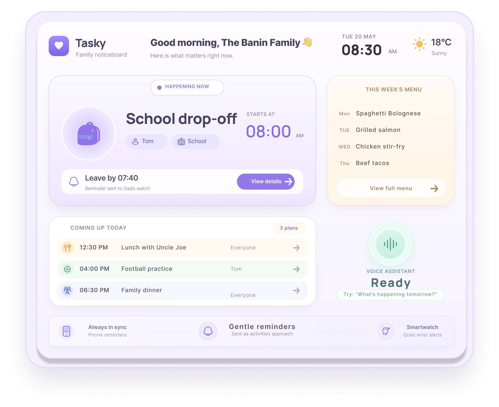

Too much depended on someone remembering.
Product Design Case Study
Tasky
An accessible family noticeboard for everyday coordination.
A shared home display that keeps what matters now visible, makes changing plans easier to manage, and keeps gentle reminders where attention is needed.
Role
UX Researcher & Interaction Designer
Responsibilities
Research • Product Strategy • Information Architecture •
Interaction Design
Personal insight: Families don’t need another calendar.
They need a shared noticeboard.
♥
Tasky
A calm family hub for everyday life.
Tasky keeps the family’s most important plans, routines and changes visible in one shared place.

01 · The Problem
Family organisation wasn’t failing because families lacked calendars.
Plans were scattered across calendars, messages and memory. When life changed, responsibilities became easy to miss.
Everyday routines shift without warning.
Family responsibilities compete for attention.
Work, school and home information compete.
02 · Research
The research challenged my first assumption.
I started by thinking families needed one better calendar. The interviews pointed to a different problem.
Initial idea
Families need one calendar that combines everything.
→
Research insight
Mental load and unexpected changes caused more stress.
03 · System & Audience
A family system has more than one user.
Tasky needed to support parents managing routines, children following plans, and family members with different levels of attention and access.
N
Neelam
Parent balancing work, school routines and household coordination. Needs important changes to remain visible without carrying everything in memory.
Parents & guardians
Need a quick overview of what requires attention without mentally carrying the entire household plan.
Children & family members
Need clear information about routines and responsibilities without navigating complex planning tools.
Different access needs
The experience needed to work across different levels of attention, confidence and interaction preference.
04 · From Insight to Concept
The solution didn’t need to become a better calendar.
I needed a way to keep family responsibilities visible without asking people to constantly open another app.
One calendar for everything
Collect every event and responsibility into one scheduling tool.
→
A shared family noticeboard
Keep what matters now visible in a persistent, home-centred coordination space.
05 · Exploring the Concept
Exploring how family information should appear at home.
I explored different ways of balancing shared visibility with a calm, low-effort experience. Each direction tested a different level of information density and focus.
01
Everything in one view
A calendar-style overview that exposes as much family information as possible at once.
02
Shared noticeboard
A balanced family hub that keeps shared plans visible while creating a clear hierarchy around what matters most.
HAPPENING NOW
03
One task at a time
A focused direction that gives the current activity most of the attention and keeps everything else secondary.
06 · Product Strategy
Turning the concept into a focused product.
I refined the concept around a small set of priorities that could reduce coordination effort rather than add another planning burden.
What matters now
Prioritise the most relevant current activity.
Everyday coordination
Support routines, reminders, meals and changing plans.
Is Tasky helping?
Reduce searching, remembering and repeated coordination.
07 · Core User Flow
Designing around everyday moments.
Instead of requiring deep navigation, I focused on three moments that represent the core Tasky experience.
01 · See
What matters right now?
The current activity receives the strongest hierarchy.
02 · Ask
“What’s happening tomorrow?”
Family information can be accessed without navigating.
03 · Change
Plans changed. Now what?
Updates remain visible and easy to understand.
08 · Voice Interaction
Making voice feel like part of the home.
Voice offers a faster route to information when someone is cooking, carrying something, getting children ready, or simply does not want to stop and touch the screen.
Ask
“What’s happening tomorrow?”
Listening
Tasky acknowledges that it is listening.
Understanding
The system finds the relevant family information.
Answer
A concise spoken and visual response closes the loop.
09 · Final Solution
A shared family noticeboard built around what matters now.
Tasks, family schedules, responsibilities and changing plans live together in one calm home experience — without requiring families to constantly check another app.
What matters now
Current priorities stay visible.
Current priorities stay visible.
Plans stay flexible
Changes remain easy to understand.
Changes remain easy to understand.
Multiple ways to access
Display, voice, phone and watch can work together.
Display, voice, phone and watch can work together.
10 · Reflection
Designing for coordination meant designing for attention.
The biggest shift was moving from a planning tool to an information environment that respects limited attention.
What changed
Calendar → shared family system
The research moved the concept beyond scheduling and toward everyday household coordination.
Accessibility
More than one path
Important information remains visible while voice, touch and connected devices provide alternative routes.
Next
Test it in real homes
Validate readability at distance, voice use, changing plans, shared access and real household routines.
Tasky taught me that reducing cognitive load is not about
removing information — it is about giving information the
right priority, at the right moment.